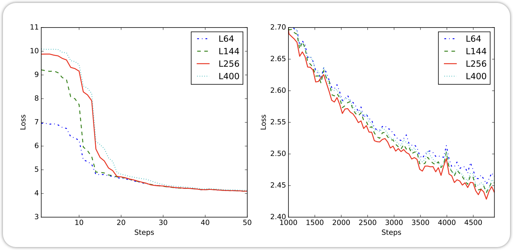
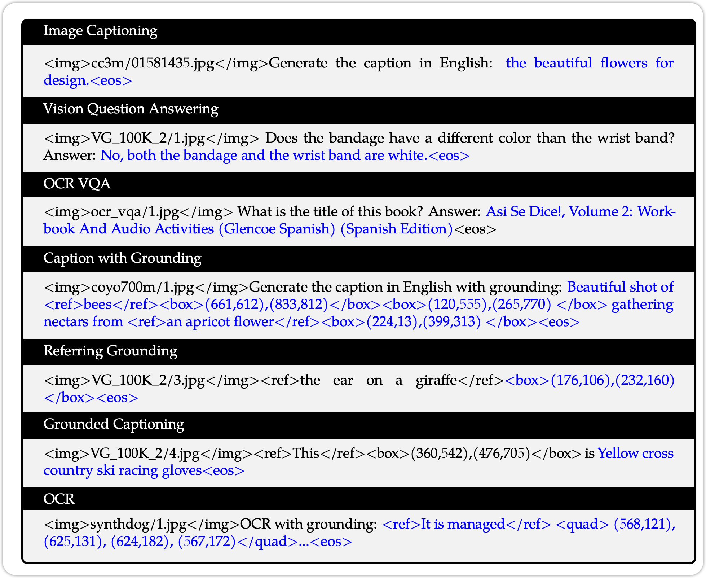
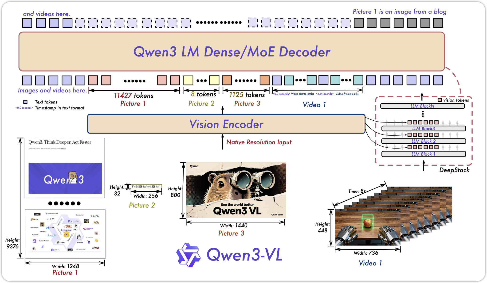
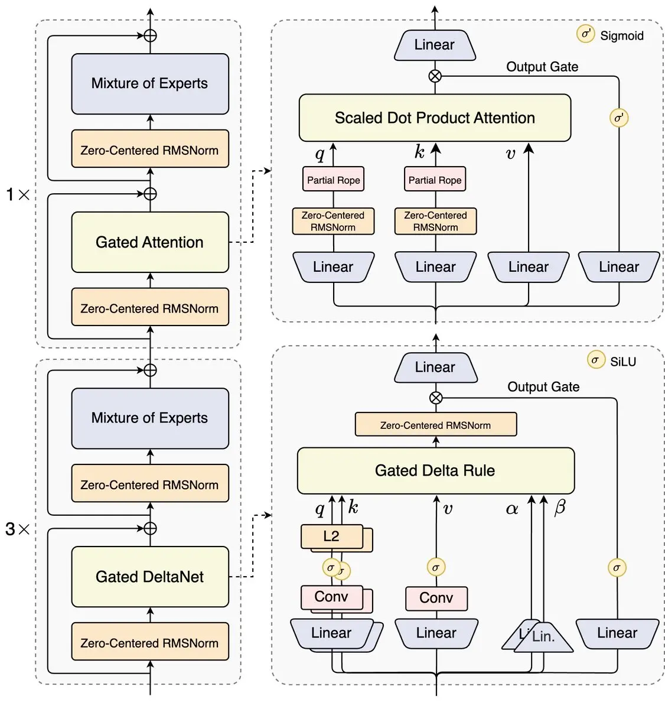

Qwen Model Series
1 Preliminary
在了解 Qwen 等LLM 模型前，我们需要先了解什么是 Transformer, 在这里就不具体展开了，有兴趣的同学前去查看 这篇文章。 对于Multi-Modality的Qwen，我们需要具备的是 Vision-Transformer 的知识。
前置知识：
Qwen（通义千问） 是阿里云旗下达摩院推出的一系列大语言模型（LLM) 与多模态模型（M-LLM）。它类似 OpenAI 的 GPT 系列，是阿里打造的全栈式统一LLM体系。 接下来，我们来沿着Qwen模型发展的时间线，来感受一下LLM发展的过程。
2 Qwen1
Qwen系列是阿里团队与2023年8月发布的LLM模型， Qwen 模型和其他的LLM类似，都有3个阶段的training:
- Pre-training
- Supervised Finetuning(SFT)
- Reinforcement Learning with human feedback (RLHF)
The model series include the base pretrained language models, chat models finetuned with human alignment techniques, i.e., supervised finetuning (SFT), reinforcement learning with human feedback (RLHF), etc., as well as specialized models in coding and math. QWEN TECHNICAL REPORT, p.3

2.1 Tokenization
Qwen 用byte pair encoding (BPE)的Tokenization的方法，这与GPT-3.5，GPT-4系列是一样的。在训练Tokenization之后，最后的Vocabulary Size 由152K。 Qwen的Tokenization的方法，实现了较低的Compression Ratio。低Compression Ratio说明了Qwen在这些语言的Training 和 Inference 中会比较高效。

2.2 Architecture
Qwen-1 的模型借鉴了LLaMA模型，也是Decoder-Only 的 Transformer (Vaswani et al. 2023) 模型，只不过有着以下几点的改变：
- Embedding and output projection: LLaMA和Transformer 都用了Weight Tying的技术，这种方式可以减少模型的参数，提高训练的效率。不过Qwen没有沿用这种方式，而是让这两个有各自的parameters。
- Positional Embedding： Qwen用了 RoPE (Su et al. 2023) 来Encoding Position消息，同时运用了
FP32的精度，来 inverse frequency matrix. - Bias: 对于许多的Layer，移除了bias的term，不过对于QKV Layers，还是加了Bias。
- Pre-Norm & RMSNorm：Qwen 模型用了 Pre-Norm 和RMSNorm来当作Normalization 的方法
- Activation Function: 用了SwiGLU当作Activation Function, 为了保持模型参数的不变，减少了d_ff到 \(\frac{8}{3}\)

2.3 Pre-Training
Pre-Training 遵循了标准的Auto-Regressive LM的训练目标，Context Length设为2048， 运用了Flash-Attention。 利用AdamW 的optimizer。 和 Cosine Learning Rate schedule. 并且运用了 Mixed Precision Training 为了提高模型的Stability 和 训练速度。
2.4 Extend Context Length
模型在训练时的Context Length设为了2048，不过这在Inference时，是不够的。于是Qwen利用了一种training-free techniques 的方法， NTK-aware interpolation
2.4.1 NTK-aware Interpolation
NTK-aware Interpolation 与普通的Position Interpolation不同，NTK-aware Interpolation adjust the base of RoPE。 Qwen的团队在NTK-aware的基础上，为了更好的压榨出NTK的性能，实现了一个NTK的extension，叫做 dynamic NTK-aware interpolation。
2.4.2 Attention
除了Position Encoding，attention的计算效率也是阻碍Context length的原因之一。 Qwen的团队用了两个Attention的技巧： - LogN-Scaling - Layer-wise Window Attention: 不同的Layer 有不同的Window Size
We also observed that the long-context modeling ability of our model varies across layers, with lower layers being more sensitive in context length extension compared to the higher layers. To leverage this observation, we assign different window sizes to each layer, using shorter windows for lower layers and longer windows for higher layers. QWEN TECHNICAL REPORT, p.8
运用了以上几个技巧之后，Qwen 模型将context length 从2048提升到了8192， 在没有损害模型能力的前提下。
2.5 Alignment
在Pre-train Qwen之后，我们不能直接使用，
2.5.1 Supervised Fine-Tuning
SFT的训练，可以让Qwen模型遵循Chat类型的回答。
2.5.1.1 Data
2.5.1.2 Training
与Pre-Training类似，SFT 用了相同的训练目标 Next-Token Prediction，不过与Pre-Training不同的是，SFT用了一个Loss Mask来mask掉system 和 user inputs。
同样运用了 AdamW optimizer
2.5.2 RLHF
在SFT之后，模型可能overfitting，并且缺少generalization 和 creativity。 为了让模型获得这些能力，在SFT之后，我们需要RLHF，这个过程涉及到两个步骤： 1. Reward Model Training 2. Policy Training
2.5.2.1 Reward Model Training
Reward Model Training 也叫做 Preference Model Pretraining (PMP)， 这个同样需要pre- training 然后Fine-Tunining。 PMP 的训练数据, 也是由一系列的comparison data 组成。
{
"prompt": "Explain why the Earth has seasons.",
"chosen": "The Earth has seasons because its axis is tilted about 23.5 degrees. As the planet orbits the Sun, this tilt causes different hemispheres to receive more or less direct sunlight throughout the year, creating seasonal temperature and daylight changes.",
"rejected": "The Earth has seasons because sometimes it randomly moves closer to the Sun and sometimes farther away."
}训练这个Reward Model。 Qwen的团队用了Pre-trained Language Model 也就是Qwen， 来当作Initiate 权重。 在这个Qwen模型之上，加上了一层Pooling Layer来提取出 Reward （一个Scalar Value） #### Policy Training
在训练完Reward Model之后，下一步就是运用Reinforcement的算法来训练LLM。Qwen的团队运用了PPO的算法，来训练，这个算法由4个部分： - Policy Model - Value Model - Reference Model - Reward Model
至此，Qwen的Foundation Model，以及训练结束了。接下来可以通过不同的训练数据，让Qwen 获得不同的能力，比如Code-Qwen，以及Math-Qwen
2.6 Code Qwen
2.7 Math Qwen
2.8 Qwen 1 Summary
3 Qwen1-VL
训练完Qwen1 之后，Qwen团队发布了Qwen-VL 的多模态大语言模型。 Qwen-VLs是基于Qwen-7B的大语言模型，在此基础上添加了 visual receptor，其中包含了 Language- aligned encoder和position aware adapter。通过3-stage pre-training来让LLM获得Visual的能力。Qwen-VL-Chat是在Qwen-VL的基础上，通过instruction-data，来使得它可以获得对话的能力。
Qwen-VLs are a series of highly performant and versatile vision-language foundation models based on Qwen-7B (Qwen, 2023) language model. We empower the LLM basement with visual capacity by introducing a new visual receptor including a language-aligned visual encoder and a positionaware adapter. Qwen-VL- A Versatile Vision-Language Model for Understanding, Localization, Text Reading, and Beyond, p.3
3.1 Model Architecture
Qwen-VL的模型主要包含了以下几个组件： - Large Language Model： Qwen-VL是基于之前的 Qwen-7B来当作大语言组件 - Visual Encoder： Visual Encoder的结构是，与 Vision-Transformer (Dosovitskiy et al. 2021) 的结构是一样的。通过加载 OpenCLIP的权重, 来初始化ViT - Position-aware Vision-Language Adapter: 为了减少 image feature的长度，Qwen-VL 利用了 Vision Language Adapter. 这个是一组Cross-Attention Module 随机初始化，这种方法将Visual Feature的长度，压缩到了256. 在这个Adapter 中，2D absolute positional encoding 也添加了进来，用来减少可能消息的丢失。
 ## Inputs and Outputs 添加了Visual Tokens之后，模型需要一种方法，来辨别出哪些是Visual Tokens, 哪些是Text Tokens
Images are processed through the visual encoder and adapter, yielding fixed-length sequences of image features. To differentiate between image feature input and text feature input, two special tokens (
and ) are appended to the beginning and end of the image feature sequence respectively, signifying the start and end of image content Qwen-VL- A Versatile Vision-Language Model for Understanding, Localization, Text Reading, and Beyond, p.4
对于不同的输入和要求，模型的输出的内容是不一样的。 
3.2 Training
Qwen-VL 的训练分为以下几个步骤，如下图所示：

3.2.0.1 Pre-Training
在这个阶段，模型训练出认识图片的能力，冻结了LLM，训练ViT和VL adapter。
3.2.0.2 Multi-Task Pre-Training
在这个阶段，模型已经有了对Image的基本认知，接下来就是训练模型对于不同要求的输出，也就是所谓的Multi-Task。 在这个阶段，所有的权重，都进行微调。通过这个训练，模型获得了完成不同任务的能力。
3.2.0.3 Supervised Finetuning
在这个阶段下，Qwen团队训练了Qwen-VL，使它获得Instruction- Following的能力。 也就是Qwen-VL-Chat Model，
Supervised Finetuning 的数据如下图所示： 
至此，Qwen-VL的训练已经结束了，
3.3 Qwen1-VL Sumary
4 Qwen1.5-MoE
2024年2月份，Qwen 团队发布了Qwen1.5的模型，以及Qwen1.5-MoE 模型，这个是Qwen的首个MoE的模型。对于Qwen1.5 模型，Qwen团队没有专门的Technical Report来介绍Qwen1.5， 只有一个基本的Blog，来介绍。 Qwen1.5 模型可以支持32768 tokens. 相对于Qwen1 有了极大的提升。Qwen1.5-MoE 是Qwen的首个MoE模型，Qwen1.5-MoE（Mixture-of-Experts）模型在传统 MoE 架构的基础上进行了多项关键性改进，目标是在 不显著增加参数量的前提下提升性能、训练稳定性与算力效率。相比 Mixtral 等经典实现，Qwen1.5-MoE 对 expert 设计、初始化策略、routing 机制 做了系统优化
5 Qwen2
仅在几个月之后，2024年的6月份，Qwen发布了全新的Qwen2 模型， Qwen2 模型了包含了 0.5 billion, 1.5 billion, 7 billion, and 72 billion, plus a Mixture-of-Experts (MoE) model with 57 billion parameters, of which 14 billion are activated for each token.
5.1 Tokenizer
Qwen2 的Tokenization的方法，与Qwen1 是一样的，都采用了BPE Tokenization Algorithms。Vocabulary Size 有151,643 Regular tokens和3 个control tokens。
5.2 Architecture
与Qwen1 相比，Qwen2 的模型改动并没有很大，主要体现在以下几个方面
5.2.1 Dense Model
5.2.1.1 Gouged Query Attention
运用了Grouped Query Attention, 这种方式可以优化KV Cache
5.2.1.2 Dual Chunk Attention with YARN
运用了Dual Chunk Attention 和 YARN 来提高Context 的长度。
5.2.2 Mixture-Of-Expert Model
6 Qwen2-VL
在介绍完Qwen2之后，接下来自然而来就是Qwen2-VL 模型。Qwen2-VL 在Qwen1-VL模型上，有了较大的提升，其中一个主要的就是：支持任何大小的图片和Video。接下来让我们看看模型的架构：
6.1 Architecture

6.1.1 Naive Dynamic Resolution
Naive Dynamic Resolution 在 NaViT (Dehghani et al. 2023) 中提出，它可以让Vision Transformer 在不同长度的图片中训练。
除此之外，Qwen2-VL 摒弃了Absolute Position Embedding，转用2D-RoPE (Su et al. 2023), 除此之外，在ViT 生成Representation之后，Qwen2-VL 还在之后添加了一层MLPLayer，它的作用是减少Tokens的数量，通过临近的 \(2\times 2\) 的tokens，MLP讲这些tokens merge在一起，将Tokens的数量减少了 4 倍。比如一张 \(224 \times 224\) 的图片, 分成大小为14的patches，得到了256 个tokens，将这些tokens merge在一起，我们就得到了 64 个tokens。
6.1.2 Multi-Modal Rotary Position Embedding (M-RoPE)
 Qwen2-VL 利用M-RoPE来提取出不同Modality之间的position 的信息。 通过将Rotary Embedding 分解成： - Temporal - Height - Width 三个部分。 对于Text 的部分，这几个部分会得到相同的IDs，这使得它可以类似于1D-RoPE的作用。对于图片的输入，Temporal 部分的ID保持不变，Height 和 Width的部分，会得到不同的IDs。 对于视频的输入，Temporal，Height，Width都会改变。
Qwen2-VL 利用M-RoPE来提取出不同Modality之间的position 的信息。 通过将Rotary Embedding 分解成： - Temporal - Height - Width 三个部分。 对于Text 的部分，这几个部分会得到相同的IDs，这使得它可以类似于1D-RoPE的作用。对于图片的输入，Temporal 部分的ID保持不变，Height 和 Width的部分，会得到不同的IDs。 对于视频的输入，Temporal，Height，Width都会改变。
M-RoPE not only enhances the modeling of positional information but also reduces the value of position IDs for images and videos, enabling the model to extrapolate to longer sequences during inference. Qwen -VL- Enhancing Vision-Language Model’s Perception of the World at Any Resolution, p.5
- For text, these three use identical position IDs → equivalent to standard 1D RoPE.
- For images, temporal ID is constant; height & width IDs encode patch position.
- For videos, temporal ID increases per frame; height & width same as image.
7 Qwen2.5
8 Qwen2.5-VL

9 Qwen3
10 QWen3-VL

11 Qwen-NEXT
